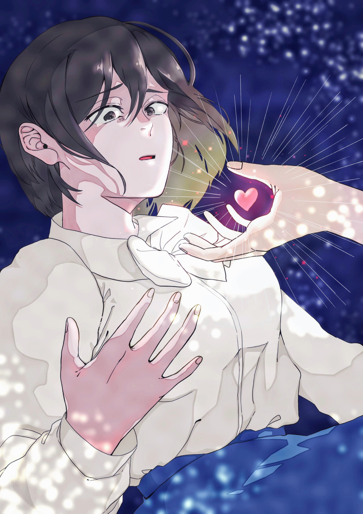

「心」を見つめ、「福祉」を拓く。
心理学で人の内面を理解し、社会福祉学で幸福な生活の基盤を創る。

心理・福祉を学ぶ心優しい学生をイメージしています。
しんぷくちゃん
心理の「しん」と福祉の「ぷく」が名前の由来。おもちの妖精で、好きな言葉は「ありがとう」と「感謝」。学生さんと共に日々成長中です。
理念
大阪大谷大学 心理・福祉学科は、生涯にわたって心身および社会的な健康を「人と社会」「心理と福祉」の立場から探求することを目的に創設されました。心理学と社会福祉学を融合させた教育体制を有し、「心に寄り添える福祉のプロになる」「社会の仕組みを知る心理のスペシャリストになる」「ひとがひとらしく生きる」ことを支える専門家を育成します。
ポータルサイト設立の主旨
本学科は2024年に創設されました。大学公式ホームページでは発信できる情報量に限りがあるため、学科の「リアル」をより深くお伝えするために本ポータルサイトを運営しています。
教員の想いが詰まった寄稿文や、ゼミの活動風景、学生が主体となって制作した資料など、貴重な情報を積極的に公開しています。
模擬授業の体験（2026年度）
心理学と社会福祉の専門教員が、心に触れる25分間の体験授業を行います [cite: 660]。最新の「ビッグファイブ理論」や「効率的な学習方法」など、今すぐ役立つテーマが満載です 。
- ✅ 心理：性格を科学的に探る「ビッグファイブ理論」 [cite: 663]
- ✅ 福祉：社会を拓く「相談援助の実践現場」 [cite: 668]
- ✅ 学習：認知心理学から見た「コスパの良い勉強法」 [cite: 665]
進路と資格
1年次に基礎を広く学び、2年次からコースを選択。公認心理師（基礎）と社会福祉士のダブル受験資格を目指せる稀少なカリキュラムが特色です。
ゼミ紹介（11名全員が対人支援の専門家）
秦 康宏 教授学科長 / 社会福祉学
ゼミ詳細を見る →
現場経験22年の実務家教員。キャリアを全力で支えます。
安田 傑 教授学科長補佐 / キャリア心理学
ゼミ詳細を見る →
「自分らしいキャリア」を心理学からサポートします。
田沢 晶子 教授臨床心理学・学生相談
ゼミ詳細を見る →
アクティブな一面と、熱心な卒論指導を併せ持つ先生です。
船本 淑恵 教授社会福祉学・障害者福祉
ゼミ詳細を見る →
笑顔で包み込みながら、冷静なデータ分析を教えてくださいます。
上西 裕之 准教授臨床心理学・学生相談
ゼミ詳細を見る →
温かさと、圧倒的な研究実績を誇る研究者肌の先生です。
小西 宏幸 教授パーソナリティ心理学
ゼミ詳細を見る →
臨床の第一人者であり、学生への情熱溢れる先生です。
植木 是 准教授スクールソーシャルワーク
ゼミ詳細を見る →
「なお」先生と呼んでください！真っ直ぐ子どもと向き合います。
谷 俊英 准教授子ども家庭福祉
ゼミ詳細を見る →
児童養護施設現場での知名度と信頼は絶大。卒業後も皆さんをサポートしてくださるかも。
河﨑 俊博 専任講師臨床心理学
ゼミ詳細を見る →
「一人の人間としてどう在るか」を共に考えていきます。
宮谷 祐史 講師障害心理・教育心理
ゼミ詳細を見る →
誰もが学びやすく過ごしやすい共生社会の未来を一緒に考えていきましょう。 公認心理師・手話通訳士。
オープンキャンパス日程
| 日程 | 内容 |
|---|---|
| 2026年 3/28(土) | ミニオープンキャンパス |
| 4/25(土), 5/24(日) | 志望校スタートOC |
| 6/21(日) | 大学まるごと体験フェア |
| 7/4(土), 7/18(土), 7/19(日) | 志望校決定・懇談ど真ん中！OC ※7/4（土）はハルカスCでの個別相談ブース |
| 8/7(金), 8/8(土) | 進路決定OC |
| 9/6(日) | 出願本番サポートデー |
| 10/12(月・祝) | 高2スタートUP OC |
| 2027年 2/27(土), 3/27(土) | 春の進路準備OC |